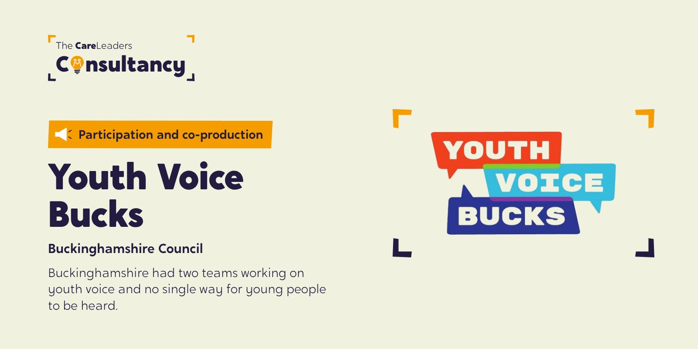
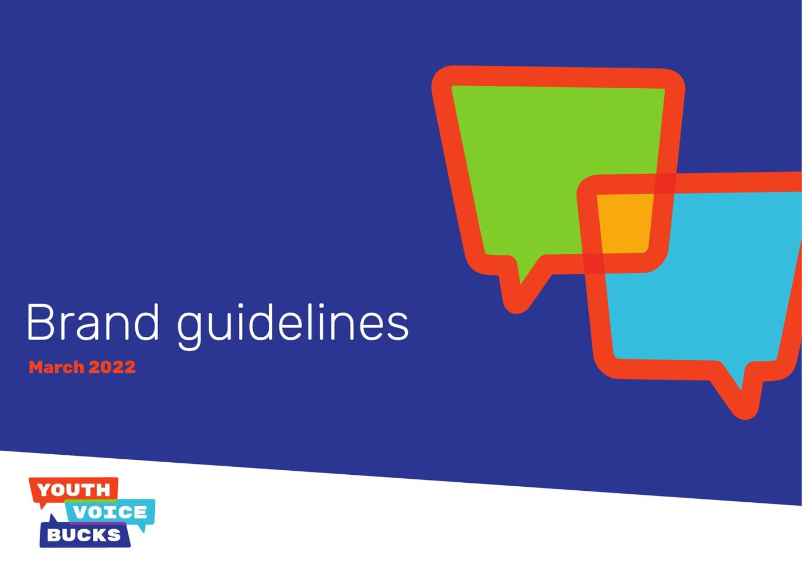
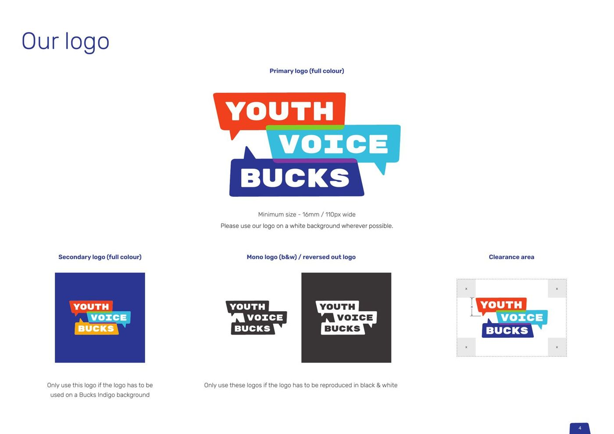

n
n
The starting point
Youth voice in Buckinghamshire was spread across two teams, with no shared strategy and no single place for young people to go. The council wanted participation that reached every service, not just the ones that already listened.
What we did
- StrategyListen, Act, Respond and RepeatThe 2021 to 2024 Participation Strategy
- StructureOne serviceTwo teams merged into Youth Voice Bucks, with a business case for a new coordinator post
- BrandThree brands, designed by young peopleYouth Voice Bucks, We Do Care and Shout Out For SEND, plus the youthvoicebucks.co.uk website
- PeopleA Champions Programme19 champions from 11 service areas
- TrainingSix all-staff sessionsThen monthly training after launch
- LaunchA launch conference6 September 2021
How we worked
Every training session and workshop was led by people with lived experience of care. Young people didn’t just advise on the brand; they designed it.
What changed
Buckinghamshire now has one participation service with its own name, strategy and website. All-staff training drew between 50 and 121 people a session, and eight monthly sessions after launch reached over 100 different professionals. The council agreed the business case for a new coordinator post.
What Buckinghamshire runs now
Youth Voice Bucks is still the council’s participation service, with its Youth Voice Executive Committee, We Do Care and Shout Out For SEND. In March 2026 the fourth annual Bucks Youth Summit brought around 160 young people and more than 100 professionals together to shape services.
See the work
What we made, and what it looked like.
The brand
Youth Voice Bucks: a name, a logo and brand guidelines designed with young people.
Youth participation strategy
One strategy and one structure for young people’s voices across the council.
Launch event
The launch that brought the two teams and the young people together.
19 champions
Young people named, branded and shaped the service across 11 service areas.

